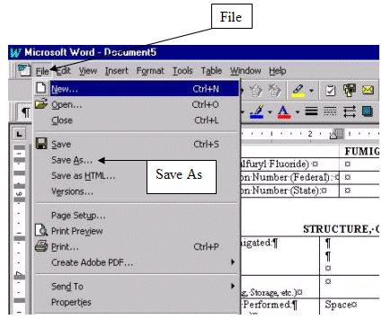
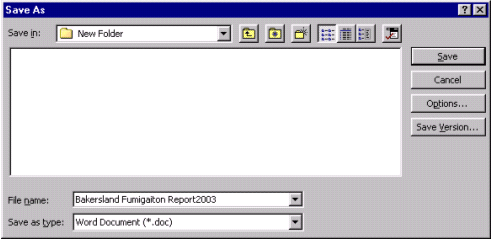
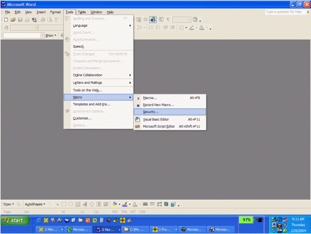
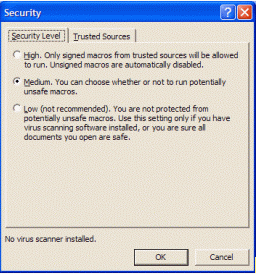

Exporting Fumiguide Data and Producing Fumigation Reports
The Fumiguide allows the user to export information into MS-Word using a Report template. With the ProFume Fumiguide desired file open,click on File from the top menu. Then click on "Export"
you will see information from fumiguide merging with the "Fumiguide Report.dot" template. This merge may take a few seconds. You will see information automatically being filled in very quickly-that is normal.
After reviewing or editing this report, you can save the file by clicking on File at the top menu and selecting Save As.

When the Save As Window opens, type the desired name you have for the file in the File name box.

If your *.txt file did not open into the MS-Word document your Macro Security setting may be set too high. To determine your Macro Security setting, within MS-Word go to Tool, Macro and click on Security.

You should select Medium which allows the option to enable or disable macros as previously described.
